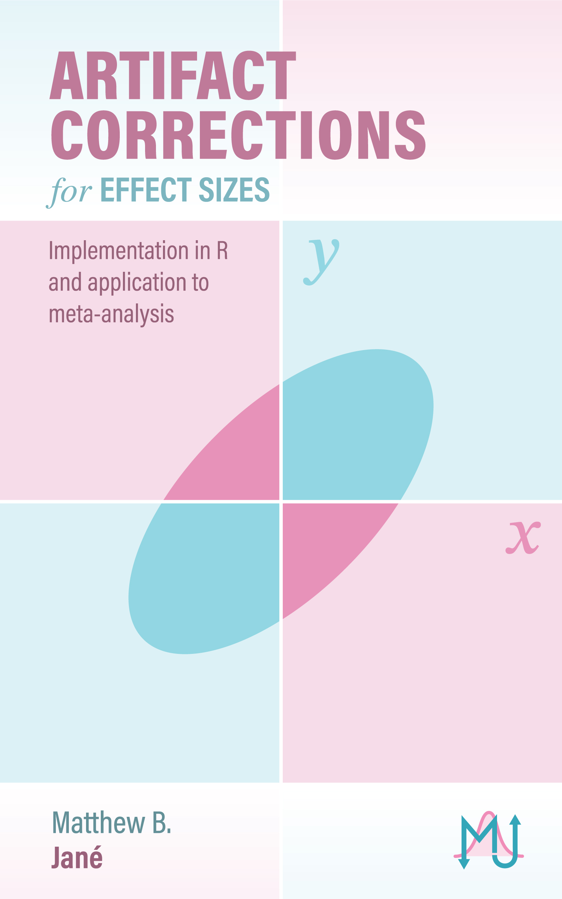

Artifact Corrections for Effect Sizes
Seeing Reality for What it is
1 Greetings

Welcome to the living open source textbook Study Artifacts and Their Corrections. This book is designed to assist social/clinical/behavioral/cognitive researchers in understanding the nature of study artifacts, their impact on effect sizes, and proper correction methods. Each chapter includes practical examples, R code, and equations for seamlessly implementing these corrections into your own research projects.

What are Study Artifacts?
In this book, artifacts will be defined broadly as any source of methodological contamination that induce bias in research findings. In an ideal world where studies are conducted perfectly, this book would not exist. Hopefully one day, we reach a point where studies contain only small, inconsequential imperfections and this book becomes obsolete, a relic of a darker past. Until that day, artifact corrections can provide a temporary band-aid to some methodological flaws.
Open and Living Textbook
A living textbook is one that continuously updates with new features and is open to changes from others. This book will contain modern methods and cutting-edge techniques for artifact corrections, so in order to keep this book up-to-date it needs to grow as the research grows.
Support My Work
Please help keep this book maintained and free for everyone by supporting me through buymeacoffee.com/matthewbjane
Citation and License
It is important that this book is both open-source and open-access. All the figures, code, and documents are available in a github repository. The current maintainer of the book is Matthew B. Jané. This work is under a CC-BY license, therefore if you use any part of this work in your own work, it is important that you acknowledge it and cite it as follows:
APA
Jané, M. B. (2024). Artifact Corrections for Effect Sizes: Seeing Reality for What It Is. (n.p.). https://matthewbjane.quarto.pub/artifact-corrections-for-effect-sizes/
BibTeX
@book{MatthewBJane2023,
title = "Artifact Corrections for Effect Sizes: Seeing Reality for What It Is",
author = "Jané, Matthew B.",
year = 2024,
publisher = "(n.p.)",
url = {https://matthewbjane.quarto.pub/artifact-corrections-for-effect-sizes/}
}Contributions
Please feel free to contribute to this textbook, if your contribution makes it to the published version of this book, your name will be included in the contributor list below with a description of your work.
| Name | Affiliation | Role |
|---|---|---|
| Blair T. Johnson | University of Connecticut | Reviewing, editing, & consulting |
| Edward Kroc | University of British Columbia | Reviewing, editing, & consulting |
| Christopher Rhoads | University of Connecticut | Reviewing & editing & consulting |
| Elizibeth Schifano | University of Connecticut | Reviewing & editing & consulting |
| Velu Immonen | Solent University | Designed cover and twitter preview. |
| Peter Licari | N/A | Reviewing & editing |
| Shane Tutwiler | University of Rhode Island | Reviewing & Editing |
| Ashley E. Mullan | Vanderbilt University Medical Center | Reviewing & editing |
| Vinícius Litvinoff Justus | University of Campinas | Reviewing & editing |
| Rafael Valdece Sousa Bastos | N/A | Reviewing & editing |
| Ryan Panela | University of Toronto | Reviewing & editing |
| Vilgot Huhn | Karolinska Institutet | Reviewing & editing |
| Jonathan Whitmore | N/A | Reviewing & editing |
| Rana Mallah | Mckinsey | Reviewing & editing |